1. Tóm tắt
Bối cảnh
- Trước Transformer: Các mô hình sequence-to-sequence mạnh nhất thường dựa trên RNN/LSTM/GRU hoặc CNN, đôi khi kết hợp thêm attention (Bahdanau-2014) để giảm bottleneck giữa encoder và decoder.
- Vấn đề chính: RNN xử lý chuỗi theo thứ tự tuần tự, nên khó song song hóa khi huấn luyện và đường truyền thông tin giữa hai token xa nhau phải đi qua nhiều bước trung gian.
- Ý tưởng đột phá: Transformer loại bỏ hoàn toàn recurrence và convolution trong kiến trúc chính, thay bằng self-attention để mỗi token có thể tương tác trực tiếp với mọi token khác trong cùng chuỗi.
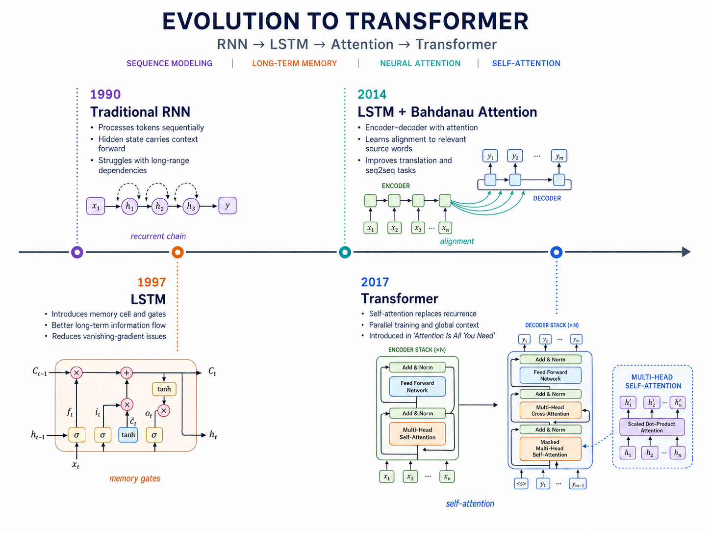
Giải pháp
- Kiến trúc encoder-decoder thuần attention: Encoder tạo ra một ma trận biểu diễn ngữ cảnh cho toàn bộ câu nguồn; decoder sinh chuỗi đích theo cơ chế tự hồi quy.
- Scaled Dot-Product Attention: Tính độ liên quan giữa Query và Key, chuẩn hóa bằng softmax, rồi lấy tổng có trọng số của Value.
- Multi-Head Attention: Chạy nhiều attention head song song để mô hình học nhiều kiểu quan hệ khác nhau: cú pháp, tham chiếu đại từ, quan hệ cục bộ, phụ thuộc xa, căn chỉnh source-target.
- Positional Encoding: Vì không còn RNN/CNN, mô hình cần thêm tín hiệu vị trí vào embedding để phân biệt thứ tự token.
Tác động
- Song song hóa tốt hơn: Tính toán chủ yếu là phép nhân ma trận lớn, phù hợp GPU/TPU.
- Học phụ thuộc xa hiệu quả: Self-attention tạo đường nối trực tiếp giữa các vị trí trong chuỗi.
- Nền tảng cho LLM hiện đại: Transformer là nền móng cho BERT, GPT, T5 và đa số mô hình ngôn ngữ lớn hiện nay.
2. Mục đích nghiên cứu
Động lực nghiên cứu (Motivation)
- Giảm tính tuần tự: RNN phải tính $h_t$ sau $h_{t-1}$, làm nghẽn song song hóa trong training.
- Rút ngắn đường phụ thuộc: Với RNN, thông tin từ token đầu đến token cuối phải đi qua nhiều bước; với self-attention, mỗi token có thể attend trực tiếp đến token khác.
- Đơn giản hóa kiến trúc: Thay vì dùng RNN/CNN làm lõi rồi gắn attention bên ngoài, Transformer dùng attention làm cơ chế truyền thông tin chính.
Mục tiêu cụ thể (Specific Objectives)
- Xây dựng mô hình sequence transduction dựa hoàn toàn trên attention.
- Giảm thời gian huấn luyện nhờ khả năng song song hóa.
- Chứng minh kiến trúc có thể tổng quát sang tác vụ khác.
3. Bài toán Sequence Transduction
Định nghĩa
Sequence transduction là bài toán biến đổi một chuỗi đầu vào thành một chuỗi đầu ra có độ dài không xác định, ví dụ:
- Dịch máy:
I love machine learning$\rightarrow$Tôi yêu học máy - Tóm tắt: văn bản dài $\rightarrow$ bản tóm tắt ngắn
- Hỏi đáp: câu hỏi/ngữ cảnh $\rightarrow$ câu trả lời
- Speech/text: tín hiệu hoặc văn bản $\rightarrow$ chuỗi khác
Công thức xác suất
Với câu nguồn $x=(x_1,\dots,x_n)$ và câu đích $y=(y_1,\dots,y_m)$, mô hình tự hồi quy học:
$$ P(y \mid x) = \prod_{t=1}^{m} P(y_t \mid y_{<t}, x) $$Trong Transformer gốc, decoder sinh token từng bước. Khi huấn luyện, ta dùng target đã biết nhưng vẫn dùng causal mask để vị trí $t$ không nhìn thấy các token tương lai $y_{>t}$.
4. Kiến trúc Transformer (Main Architecture)
Transformer gốc dùng kiến trúc encoder-decoder. Với cấu hình base trong paper:
- $N=6$ encoder layers và $N=6$ decoder layers.
- $d_{model}=512$.
- $h=8$ attention heads.
- $d_k=d_v=64$ cho mỗi head.
- $d_{ff}=2048$ cho feed-forward network.
- Dropout cơ bản: $0.1$.
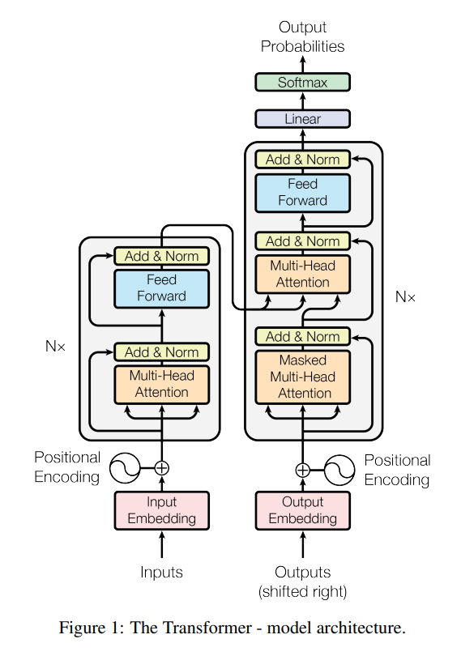
4.1 Big Picture: Encoder-Decoder Stack
Lý thuyết
Encoder nhận chuỗi nguồn và trả về ma trận memory:
$$ H = \text{Encoder}(x) = [h_1, h_2, \dots, h_n], \quad h_i \in \mathbb{R}^{d_{model}} $$Decoder dùng các target token trước đó và memory $H$ để dự đoán token tiếp theo:
$$ P(y_t \mid y_{<t}, x) = \text{softmax}(W_o s_t) $$Trong đó $s_t$ là hidden state của decoder tại vị trí $t$.
- Encoder không ép toàn bộ câu nguồn vào một vector duy nhất; nó trả về memory $H$ gồm một vector ngữ cảnh cho từng token nguồn.
- Trong cross-attention, decoder dùng trạng thái hiện tại làm Query, còn memory $H$ của encoder làm Key/Value.
- Trực giác dịch máy: khi sinh token "mèo", decoder có thể attend mạnh vào token
catstrong câu nguồn.
4.2 Embedding và Positional Encoding
Lý thuyết
Transformer không dùng recurrence hay convolution, nên bản thân token embedding không chứa thông tin thứ tự. Vì vậy paper cộng thêm positional encoding $PE$ vào input embedding $E(x)$:
$$ Z_0 = E(x) + PE $$Với sinusoidal positional encoding:
$$ PE_{(pos,2i)} = \sin\left(\frac{pos}{10000^{2i/d_{model}}}\right) $$ $$ PE_{(pos,2i+1)} = \cos\left(\frac{pos}{10000^{2i/d_{model}}}\right) $$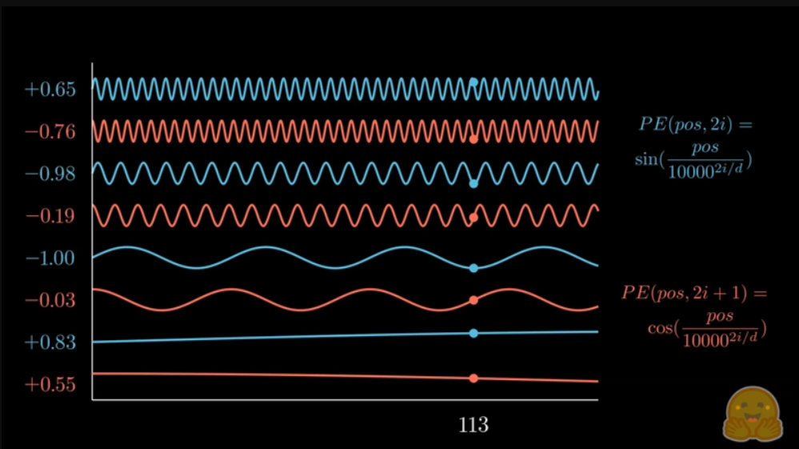
class PositionalEncoding(nn.Module):
"""Sinusoidal positional encoding đúng công thức Transformer gốc.
Input/Output shape:
x: [batch, seq_len, d_model]
"""
def __init__(self, d_model: int, max_len: int = 5000, dropout: float = 0.1):
super().__init__()
self.dropout = nn.Dropout(dropout) # Dropout áp dụng sau khi cộng PE
# Khởi tạo ma trận PE kích thước [max_len, d_model]
pe = torch.zeros(max_len, d_model)
# position: vector [0, 1, 2, ..., max_len-1] — vị trí của từng token
position = torch.arange(0, max_len, dtype=torch.float).unsqueeze(1)
# div_term tạo các tần số khác nhau cho mỗi cặp chiều sin/cos
# Công thức: exp(-(2i) * log(10000) / d_model) = 1 / 10000^(2i/d_model)
div_term = torch.exp(
torch.arange(0, d_model, 2).float() * (-math.log(10000.0) / d_model)
)
# Chiều chẵn (0, 2, 4, ...) dùng sin
pe[:, 0::2] = torch.sin(position * div_term)
# Chiều lẻ (1, 3, 5, ...) dùng cos
pe[:, 1::2] = torch.cos(position * div_term)
# Thêm batch dimension để broadcast: [1, max_len, d_model]
pe = pe.unsqueeze(0)
# register_buffer: PE tự động chuyển device cùng model, không phải tham số học
self.register_buffer("pe", pe)
def forward(self, x: torch.Tensor) -> torch.Tensor:
seq_len = x.size(1) # Lấy độ dài sequence thực tế từ input
x = x + self.pe[:, :seq_len] # Cộng PE vào embedding
return self.dropout(x) # Dropout trước khi vào encoder layerTại sao cộng thay vì nối (concat)?
- Cộng giữ nguyên kích thước $d_{model}$, giúp interface giữa các layer không đổi, ngược với nối.
- Sinusoidal PE giúp mô hình suy luận vị trí tương đối và có khả năng extrapolate tốt hơn sang chuỗi dài hơn so với độ dài đã thấy trong training.
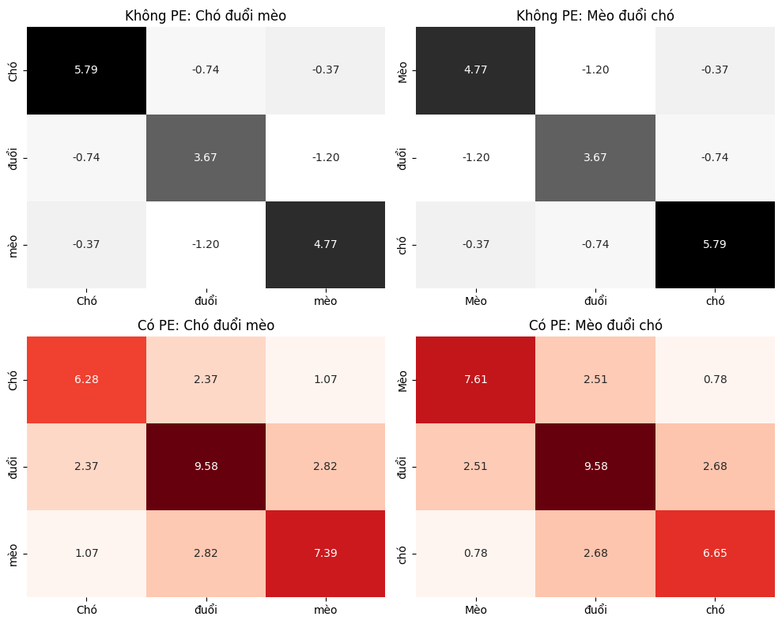
4.3 Query-Key-Value và Scaled Dot-Product Attention
Lý thuyết
Attention ánh xạ Query, Key, Value thành output. Với ma trận:
- $Q \in \mathbb{R}^{L_q \times d_k}$
- $K \in \mathbb{R}^{L_k \times d_k}$
- $V \in \mathbb{R}^{L_k \times d_v}$
Scaled Dot-Product Attention được định nghĩa:
$$ \text{Attention}(Q,K,V)=\text{softmax}\left(\frac{QK^T}{\sqrt{d_k}}\right)V $$Hệ số $\sqrt{d_k}$ giúp tránh dot-product quá lớn khi $d_k$ cao, vì softmax có thể bão hòa và gradient trở nên rất nhỏ.
Trực giác Q-K-V
- Query: token hiện tại đang cần thông tin gì?
- Key: mỗi token khác có "nhãn so khớp" gì?
- Value: nội dung thực sự được lấy về khi attention weight cao.
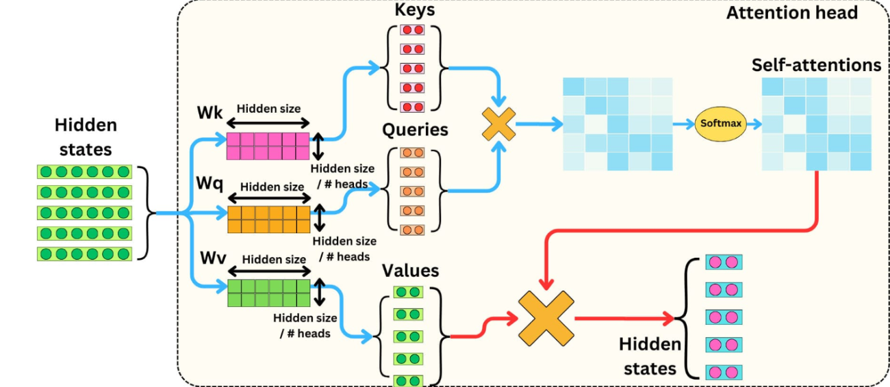
Trong self-attention, $Q,K,V$ không phải ba input riêng biệt; chúng được chiếu từ cùng input $X$:
$$ Q=XW_Q, \quad K=XW_K, \quad V=XW_V $$- Có thể hiểu attention theo ba bước: so Query với Key, softmax để tạo attention weights, rồi lấy tổng có trọng số của Value.
- Ví dụ trực giác: trong câu
The animal didn't cross because it was tired, Query củaitcó thể khớp mạnh với Key củaanimal, nên lấy nhiều thông tin Value từanimal. - Với Transformer base, nếu $X \in \mathbb{R}^{L \times 512}$ và mỗi head có $d_k=d_v=64$, thì $Q,K,V \in \mathbb{R}^{L \times 64}$ và attention map có kích thước $L \times L$.
class ScaledDotProductAttention(nn.Module):
"""Scaled Dot-Product Attention — lõi của cơ chế attention.
Q, K, V shape thường là:
[batch, num_heads, seq_len, d_k]
mask shape cần broadcast được về:
[batch, num_heads, query_len, key_len]
"""
def __init__(self, dropout: float = 0.1):
super().__init__()
self.dropout = nn.Dropout(dropout) # Dropout trên attention weights
def forward(
self,
Q: torch.Tensor,
K: torch.Tensor,
V: torch.Tensor,
mask: torch.Tensor | None = None,
) -> tuple[torch.Tensor, torch.Tensor]:
d_k = Q.size(-1) # Kích thước chiều key, dùng để scale
# Bước 1: Tính attention score = Q @ K^T, chia sqrt(d_k) để tránh bão hòa softmax
scores = torch.matmul(Q, K.transpose(-2, -1)) / math.sqrt(d_k)
if mask is not None:
# Bước 2: Che các vị trí bị cấm bằng -1e9 để softmax về 0
scores = scores.masked_fill(mask == 0, -1e9)
# Bước 3: Softmax theo chiều key — mỗi query có phân phối attention
attn_weights = torch.softmax(scores, dim=-1)
attn_weights = self.dropout(attn_weights)
# Bước 4: Context = tổng có trọng số của Value theo attention weights
context = torch.matmul(attn_weights, V)
return context, attn_weights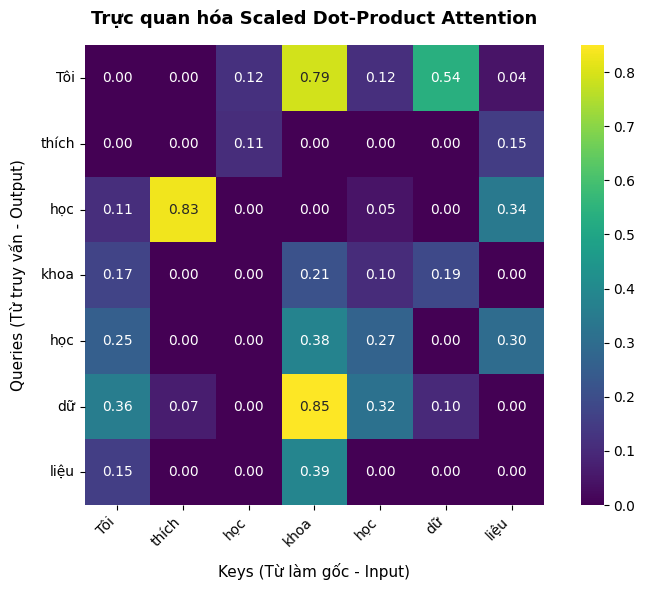
4.4 Multi-Head Attention
Lý thuyết
Một attention head có thể bị buộc phải học nhiều quan hệ cùng lúc. Multi-head attention chia không gian biểu diễn thành nhiều head song song:
$$ \text{head}_i = \text{Attention}(QW_i^Q, KW_i^K, VW_i^V) $$ $$ \text{MultiHead}(Q,K,V) = \text{Concat}(\text{head}_1,\dots,\text{head}_h)W^O $$Với Transformer base: $h=8$, $d_k=d_v=64$, tổng chi phí xấp xỉ một attention head có full dimension vì mỗi head nhỏ hơn.
- Một head có thể học local/identity pattern, chẳng hạn token "chú ý" mạnh vào chính nó hoặc láng giềng gần.
- Một head khác có thể học reference/semantic pattern, ví dụ quan hệ
it → animal. - Multi-head attention giúp mô hình học nhiều loại quan hệ song song thay vì ép tất cả vào một attention map duy nhất.

class MultiHeadAttention(nn.Module):
"""Multi-Head Attention — chạy nhiều head attention song song.
Dùng được cho:
- Encoder self-attention: q=k=v=encoder hidden states.
- Decoder masked self-attention: q=k=v=decoder hidden states + causal mask.
- Cross-attention: q từ decoder, k/v từ encoder memory.
"""
def __init__(self, d_model: int, num_heads: int, dropout: float = 0.1):
super().__init__()
assert d_model % num_heads == 0, "d_model phải chia hết cho num_heads"
self.d_model = d_model # Kích thước embedding đầu vào/ra
self.num_heads = num_heads # Số lượng head song song
self.d_k = d_model // num_heads # Kích thước mỗi head
# Ba phép chiếu tuyến tính riêng cho Q, K, V (mỗi head có bộ chiếu riêng bên trong)
self.W_q = nn.Linear(d_model, d_model) # Query projection
self.W_k = nn.Linear(d_model, d_model) # Key projection
self.W_v = nn.Linear(d_model, d_model) # Value projection
self.W_o = nn.Linear(d_model, d_model) # Output projection — trộn lại các heads
self.attention = ScaledDotProductAttention(dropout)
def _split_heads(self, x: torch.Tensor) -> torch.Tensor:
"""Tách tensor từ [batch, seq_len, d_model] thành [batch, num_heads, seq_len, d_k]."""
batch_size = x.size(0)
return x.view(batch_size, -1, self.num_heads, self.d_k).transpose(1, 2)
def _combine_heads(self, x: torch.Tensor) -> torch.Tensor:
"""Gộp các head lại: [batch, num_heads, seq_len, d_k] -> [batch, seq_len, d_model]."""
batch_size = x.size(0)
return x.transpose(1, 2).contiguous().view(batch_size, -1, self.d_model)
def forward(
self,
q: torch.Tensor,
k: torch.Tensor,
v: torch.Tensor,
mask: torch.Tensor | None = None,
) -> tuple[torch.Tensor, torch.Tensor]:
# Bước 1: Chiếu Q, K, V qua linear rồi tách thành nhiều head
Q = self._split_heads(self.W_q(q)) # [B, H, L_q, d_k]
K = self._split_heads(self.W_k(k)) # [B, H, L_k, d_k]
V = self._split_heads(self.W_v(v)) # [B, H, L_k, d_v]
# Bước 2: Attention song song trên tất cả các head
context, attn_weights = self.attention(Q, K, V, mask)
# Bước 3: Concat các head và chiếu về d_model
context = self._combine_heads(context)
output = self.W_o(context)
return output, attn_weights4.5 Position-wise Feed-Forward Network
Lý thuyết
Sau attention, mỗi vị trí đi qua cùng một mạng feed-forward hai lớp:
$$ FFN(x)=max(0, xW_1+b_1)W_2+b_2 $$Với Transformer base:
- Input/output: $d_{model}=512$.
- Hidden dimension: $d_{ff}=2048$.
- Cùng công thức áp dụng độc lập cho từng token position.
Công dụng
- Biến đổi phi tuyến từng token sau khi đã trộn ngữ cảnh.
- Tăng năng lực biểu diễn mà không cần thêm tương tác giữa các vị trí.
- Giữ kiến trúc ổn định vì cùng một MLP được áp dụng cho mọi token.
Trực giác
- Attention trộn thông tin giữa các token.
- FFN biến đổi phi tuyến biểu diễn tại từng token.
- Add & Norm giúp training ổn định hơn và giữ gradient đi qua residual path.
class PositionwiseFeedForward(nn.Module):
"""FFN hai lớp dùng chung cho mọi token position — biến đổi phi tuyến từng token."""
def __init__(self, d_model: int = 512, d_ff: int = 2048, dropout: float = 0.1):
super().__init__()
# Lớp tuyến tính thứ nhất: mở rộng từ d_model lên d_ff (512 -> 2048)
self.linear1 = nn.Linear(d_model, d_ff)
# Lớp tuyến tính thứ hai: chiếu ngược từ d_ff về d_model
self.linear2 = nn.Linear(d_ff, d_model)
self.dropout = nn.Dropout(dropout) # Dropout sau ReLU để chống overfitting
def forward(self, x: torch.Tensor) -> torch.Tensor:
# linear1 -> ReLU (phi tuyến) -> dropout -> linear2
return self.linear2(self.dropout(F.relu(self.linear1(x))))4.6 Encoder Layer
Lý thuyết
Mỗi encoder layer gồm hai sub-layer:
- Multi-head self-attention không mask.
- Position-wise feed-forward network.
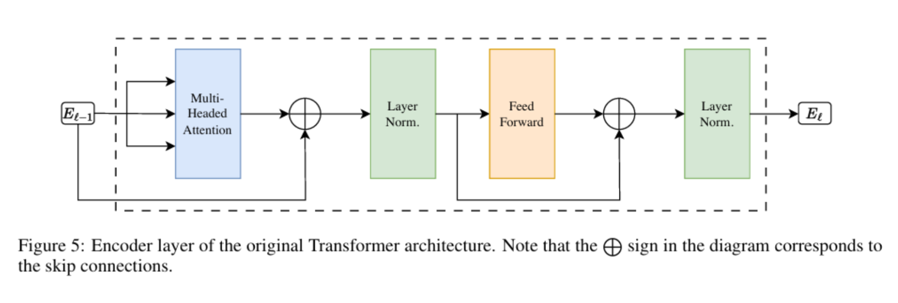
Mỗi sub-layer được bọc bởi residual connection và layer normalization:
$$ LayerNorm(x + Sublayer(x)) $$Luồng encoder layer:
$$ x_tilde = LayerNorm(x + MultiHeadSelfAttention(x, x, x)) $$ $$ EncoderLayer(x) = LayerNorm(x_tilde + FFN(x_tilde)) $$Công dụng
- Tạo biểu diễn ngữ cảnh cho toàn bộ câu nguồn ở từng layer.
- Cho phép mỗi token nhìn toàn bộ source sequence để gom thông tin liên quan.
- Cung cấp memory $H$ cho decoder dùng ở cross-attention.
- Encoder self-attention là unmasked: mỗi token nguồn được nhìn toàn bộ câu nguồn, trừ các vị trí padding.
- Mỗi encoder layer có cùng dạng khối nhưng không chia sẻ trọng số với các layer khác.
class EncoderLayer(nn.Module):
"""Một encoder block theo kiến trúc gốc: self-attention -> Add&Norm -> FFN -> Add&Norm."""
def __init__(self, d_model: int = 512, num_heads: int = 8, d_ff: int = 2048, dropout: float = 0.1):
super().__init__()
# Sub-layer 1: Multi-head self-attention (không mask)
self.self_attn = MultiHeadAttention(d_model, num_heads, dropout)
# Sub-layer 2: Position-wise feed-forward network
self.ffn = PositionwiseFeedForward(d_model, d_ff, dropout)
# Layer normalization sau mỗi sub-layer
self.norm1 = nn.LayerNorm(d_model)
self.norm2 = nn.LayerNorm(d_model)
self.dropout = nn.Dropout(dropout) # Dropout trên output của mỗi sub-layer
def forward(self, x: torch.Tensor, src_mask: torch.Tensor | None = None):
# Sub-layer 1: Self-attention -> residual -> layer norm
attn_out, attn_weights = self.self_attn(x, x, x, src_mask)
x = self.norm1(x + self.dropout(attn_out))
# Sub-layer 2: FFN -> residual -> layer norm
ffn_out = self.ffn(x)
x = self.norm2(x + self.dropout(ffn_out))
return x, attn_weights4.7 Causal Mask Attention
Lý thuyết
Trong decoder self-attention, mô hình được huấn luyện với toàn bộ target sequence đã biết. Nếu không có causal mask, vị trí $t$ có thể nhìn thấy các token tương lai $y_{>t}$, dẫn đến rò rỉ đáp án và phá vỡ giả định tự hồi quy.
Causal mask đảm bảo:
$$ P(y_t \mid y_{<t},x) \quad \text{không được phụ thuộc vào} \quad y_{>t} $$Về mặt attention score, mask được áp dụng trước softmax:
$$ \text{MaskedAttention}(Q,K,V)=\text{softmax}\left(\frac{QK^T}{\sqrt{d_k}} + M\right)V $$Trong đó $M_{ij}=0$ nếu vị trí query $i$ được phép nhìn key $j$, và $M_{ij}=-\infty$ nếu $j>i$.
Công dụng
- Giữ đúng cơ chế sinh từng bước: token hiện tại chỉ dựa vào các token trước đó.
- Cho phép training song song trên toàn bộ target sequence mà không làm decoder nhìn trước đáp án.
- Kết hợp với padding mask để vừa chặn token tương lai, vừa bỏ qua các vị trí
<pad>.
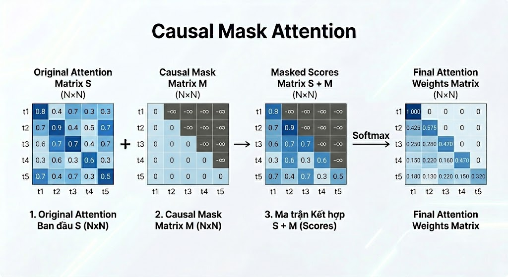
def make_padding_mask(tokens: torch.Tensor, pad_id: int = 0) -> torch.Tensor:
"""Tạo padding mask: True ở token thật, False ở <pad>.
Output shape [batch, 1, 1, seq_len] để broadcast với attention scores.
unsqueeze(1) cho num_heads dim, unsqueeze(2) cho key_len dim.
"""
return (tokens != pad_id).unsqueeze(1).unsqueeze(2)
def make_causal_mask(seq_len: int, device: torch.device | None = None) -> torch.Tensor:
"""Tam giác dưới: vị trí t chỉ nhìn được các vị trí <= t.
Output shape [1, 1, seq_len, seq_len] để broadcast qua batch và heads.
Dùng torch.tril để lấy ma trận tam giác dưới (lower triangular).
"""
return torch.tril(
torch.ones(seq_len, seq_len, dtype=torch.bool, device=device)
).view(1, 1, seq_len, seq_len)
def make_tgt_mask(tgt_tokens: torch.Tensor, pad_id: int = 0) -> torch.Tensor:
"""Kết hợp padding mask và causal mask cho decoder self-attention.
AND logic: vị trí token phải vừa không phải pad vừa không phải tương lai.
"""
tgt_pad_mask = make_padding_mask(tgt_tokens, pad_id) # [B, 1, 1, T]
causal_mask = make_causal_mask(
tgt_tokens.size(1),
tgt_tokens.device,
) # [1, 1, T, T]
return tgt_pad_mask & causal_mask4.8 Cross Attention
Lý thuyết
Cross attention là sub-layer giúp decoder truy cập thông tin từ encoder. Khác với self-attention, ba thành phần $Q,K,V$ không đến từ cùng một chuỗi:
$$ Q = YW_Q, \quad K = HW_K, \quad V = HW_V $$Trong đó:
- $Y \in \mathbb{R}^{T \times d_{model}}$ là hidden states hiện tại của decoder.
- $H \in \mathbb{R}^{S \times d_{model}}$ là encoder memory của source sequence.
- $Q$ biểu diễn "decoder đang cần thông tin gì".
- $K,V$ biểu diễn "source có thông tin gì để cung cấp".
Sau đó cross attention vẫn dùng cùng công thức scaled dot-product attention:
$$ \text{CrossAttention}(Y,H)=\text{Attention}(YW_Q, HW_K, HW_V) $$Công dụng
- Tạo soft alignment giữa target token đang sinh và các source token liên quan.
- Cho phép decoder dùng lại toàn bộ encoder memory thay vì ép câu nguồn vào một vector duy nhất.
- Trong dịch máy, khi decoder sinh một từ đích, cross attention có thể tập trung vào các từ nguồn tương ứng.
class CrossAttention(nn.Module):
"""Cross-attention: query từ decoder, key/value từ encoder memory.
Đây là cầu nối giữa encoder và decoder — decoder "hỏi" encoder để lấy thông tin.
"""
def __init__(self, d_model: int = 512, num_heads: int = 8, dropout: float = 0.1):
super().__init__()
self.attn = MultiHeadAttention(d_model, num_heads, dropout)
def forward(
self,
decoder_states: torch.Tensor, # Query: trạng thái decoder hiện tại
encoder_memory: torch.Tensor, # Key/Value: output cuối của encoder
src_mask: torch.Tensor | None = None, # Padding mask của source
) -> tuple[torch.Tensor, torch.Tensor]:
# Q từ decoder, K và V cùng từ encoder memory
return self.attn(
q=decoder_states,
k=encoder_memory,
v=encoder_memory,
mask=src_mask,
)4.9 Output Projection và Softmax
Lý thuyết
Decoder output được chiếu về vocabulary size để dự đoán token tiếp theo:
$$ logits_t = s_t W_o + b_o $$ $$ P(y_t \mid y_{<t},x)=\text{softmax}(\text{logits}_t) $$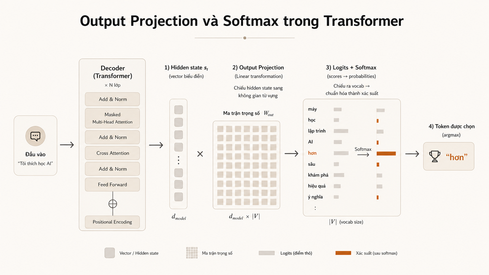
Paper gốc dùng learned embeddings cho input/output token và dùng softmax thông thường để sinh xác suất token. Các embedding layer và pre-softmax linear transformation chia sẻ cùng weight matrix trong mô hình.
Công dụng
- Chuyển hidden state sang không gian từ vựng để tạo dự đoán.
- Biến logits thành xác suất để lấy token kế tiếp khi decoding.
- Cho phép dùng chung cơ chế train/inference với cross-entropy và sampling/beam search.
class Generator(nn.Module):
"""Chiếu decoder hidden states về vocabulary logits để dự đoán token tiếp theo."""
def __init__(self, d_model: int, vocab_size: int):
super().__init__()
self.proj = nn.Linear(d_model, vocab_size) # Chiếu từ d_model lên không gian từ vựng
def forward(self, decoder_states: torch.Tensor) -> torch.Tensor:
# Output shape: [batch, tgt_len, vocab_size] — logits cho mỗi token position
return self.proj(decoder_states)
def sequence_cross_entropy(logits: torch.Tensor, labels: torch.Tensor, pad_id: int = 0) -> torch.Tensor:
"""Cross-entropy loss cho sequence, bỏ qua padding positions."""
vocab_size = logits.size(-1)
return F.cross_entropy(
logits.reshape(-1, vocab_size), # Gộp batch và seq_len để tính loss theo từng token
labels.reshape(-1), # Nhãn dạng phẳng tương ứng
ignore_index=pad_id, # Bỏ qua vị trí pad khi tính loss
)4.10 Decoder Layer
Lý thuyết
Mỗi decoder layer gồm ba sub-layer theo đúng thứ tự:
- Masked multi-head self-attention: token ở vị trí $t$ chỉ được nhìn các token $\le t$.
- Encoder-decoder attention / cross-attention: Query đến từ decoder, Key/Value đến từ encoder memory $H$.
- Position-wise feed-forward network.
Mỗi sub-layer đều được bọc bởi residual connection và layer normalization:
$$ LayerNorm(x + Sublayer(x)) $$Luồng decoder layer có thể viết gọn:
$$ y_1 = LayerNorm(y + MaskedSelfAttention(y,y,y)) $$ $$ y_2 = LayerNorm(y_1 + CrossAttention(y_1,H,H)) $$ $$ DecoderLayer(y,H)=LayerNorm(y_2 + FFN(y_2)) $$Công dụng
- Masked self-attention xây dựng ngữ cảnh bên trái trong target sequence.
- Cross-attention lấy thông tin từ source sequence thông qua encoder memory.
- FFN biến đổi phi tuyến từng vị trí sau khi đã trộn thông tin target và source.
class DecoderLayer(nn.Module):
"""Một decoder block: masked self-attn -> cross-attn -> FFN, mỗi bước có Add&Norm."""
def __init__(self, d_model: int = 512, num_heads: int = 8, d_ff: int = 2048, dropout: float = 0.1):
super().__init__()
# Sub-layer 1: Masked self-attention — không nhìn token tương lai
self.self_attn = MultiHeadAttention(d_model, num_heads, dropout)
# Sub-layer 2: Cross-attention — query từ decoder, key/value từ encoder
self.cross_attn = MultiHeadAttention(d_model, num_heads, dropout)
# Sub-layer 3: Feed-forward network
self.ffn = PositionwiseFeedForward(d_model, d_ff, dropout)
self.norm1 = nn.LayerNorm(d_model) # Layer norm sau self-attention
self.norm2 = nn.LayerNorm(d_model) # Layer norm sau cross-attention
self.norm3 = nn.LayerNorm(d_model) # Layer norm sau FFN
self.dropout = nn.Dropout(dropout)
def forward(
self,
y: torch.Tensor, # Hidden states của decoder
encoder_memory: torch.Tensor, # Memory từ encoder
tgt_mask: torch.Tensor | None = None, # Causal mask + padding mask
src_mask: torch.Tensor | None = None, # Padding mask của source
):
# Bước 1: Masked self-attention — q=k=v=y với causal mask
self_attn_out, self_attn_weights = self.self_attn(y, y, y, tgt_mask)
y = self.norm1(y + self.dropout(self_attn_out))
# Bước 2: Cross-attention — q từ decoder, k/v từ encoder memory
cross_attn_out, cross_attn_weights = self.cross_attn(y, encoder_memory, encoder_memory, src_mask)
y = self.norm2(y + self.dropout(cross_attn_out))
# Bước 3: Feed-forward network áp dụng cho từng token
ffn_out = self.ffn(y)
y = self.norm3(y + self.dropout(ffn_out))
return y, self_attn_weights, cross_attn_weights5. Huấn luyện Transformer
5.1 Mục tiêu huấn luyện
Với translation, mô hình tối đa hóa log-likelihood của chuỗi đích:
$$ \mathcal{L} = -\sum_{t=1}^{m}\log P(y_t \mid y_{<t},x) $$Trong training, decoder input thường là target sequence dịch phải:
- Decoder input:
<START> Tôi yêu mèo - Expected output:
Tôi yêu mèo <END> - Mỗi vị trí decoder học dự đoán token tiếp theo, nên một sequence tạo ra nhiều supervision signals song song.
- Dù target đã biết trong training, causal mask vẫn bắt buộc để mô hình không nhìn thấy các token tương lai.
def training_step(model, batch, optimizer, scheduler=None, pad_id: int = 0):
"""Một bước train tối thiểu cho Transformer encoder-decoder."""
model.train()
src_ids, tgt_ids = batch # src_ids: [B, src_len], tgt_ids: [B, tgt_len]
# Teacher forcing: decoder input bỏ token cuối, label bỏ token đầu
tgt_input_ids = tgt_ids[:, :-1] # [B, tgt_len-1] — input cho decoder
tgt_labels = tgt_ids[:, 1:] # [B, tgt_len-1] — token cần dự đoán
# Tạo masks
src_mask = make_padding_mask(src_ids, pad_id) # Che padding của source
tgt_mask = make_tgt_mask(tgt_input_ids, pad_id) # Causal + padding mask cho decoder
# Forward pass: model trả về logits [B, tgt_len-1, vocab_size]
logits = model(src_ids, tgt_input_ids, src_mask, tgt_mask)
loss = sequence_cross_entropy(logits, tgt_labels, pad_id)
# Backward và cập nhật weights
optimizer.zero_grad(set_to_none=True)
loss.backward()
optimizer.step()
if scheduler is not None:
scheduler.step() # Cập nhật learning rate theo schedule
return loss.item()5.2 Optimizer, Learning Rate Schedule, Regularization
Công thức learning rate
Paper dùng Adam với:
- $\beta_1=0.9$
- $\beta_2=0.98$
- $\epsilon=10^{-9}$
warmup_steps = 4000
Learning rate schedule:
$$ \text{lrate} = d_{model}^{-0.5}\cdot \min(\text{step}^{-0.5},\; \text{step}\cdot \text{warmup}^{-1.5}) $$Regularization
- Residual dropout trước Add & Norm.
- Dropout trên tổng embedding + positional encoding.
- Label smoothing với $\epsilon_{ls}=0.1$.
- Checkpoint averaging và beam search được dùng khi inference trong thí nghiệm dịch máy.
class NoamScheduler:
"""Learning-rate schedule trong paper Attention Is All You Need.
Trong warmup phase: lr tăng tuyến tính.
Sau warmup: lr giảm theo tỷ lệ step^-0.5.
lr = d_model^-0.5 * min(step^-0.5, step * warmup^-1.5)
"""
def __init__(self, optimizer: torch.optim.Optimizer, d_model: int = 512, warmup_steps: int = 4000, factor: float = 1.0):
self.optimizer = optimizer # Optimizer cần điều chỉnh lr
self.d_model = d_model # Hệ số chuẩn hóa: d_model^-0.5
self.warmup_steps = warmup_steps # Số bước warmup (trong paper: 4000)
self.factor = factor # Hệ số nhân (mặc định 1.0)
self.step_num = 0 # Đếm số bước đã chạy
def rate(self, step: int | None = None) -> float:
"""Tính learning rate tại step cho trước (hoặc step hiện tại)."""
step = self.step_num if step is None else step
step = max(step, 1) # Tránh division by zero
# Công thức Noam: d_model^-0.5 * min(step^-0.5, step * warmup_steps^-1.5)
return self.factor * (self.d_model ** -0.5) * min(
step ** -0.5, # Decay phase: lr giảm dần
step * (self.warmup_steps ** -1.5), # Warmup phase: lr tăng tuyến tính
)
def step(self):
"""Tăng step counter và cập nhật lr cho optimizer."""
self.step_num += 1
lr = self.rate()
for group in self.optimizer.param_groups:
group["lr"] = lr
return lr6. Kết quả thực nghiệm (Results)
Phần kết quả trong paper không chỉ báo cáo điểm BLEU cao hơn. Ba bảng chính còn trả lời ba câu hỏi khác nhau:
- Machine Translation: Transformer có dịch tốt hơn các mô hình trước đó không, và chi phí huấn luyện có thấp hơn không?
- Model Variations: Thành phần nào trong kiến trúc Transformer thực sự quan trọng?
- Parsing: Kiến trúc này có tổng quát sang tác vụ ngoài dịch máy không?
6.1 Machine Translation: EN-DE và EN-FR
Transformer được đánh giá trên hai benchmark dịch máy lớn của WMT 2014: English-to-German (EN-DE) và English-to-French (EN-FR). Bảng kết quả cho thấy Transformer không chỉ đạt BLEU cao hơn các mô hình mạnh trước đó, mà còn có chi phí huấn luyện thấp hơn đáng kể.
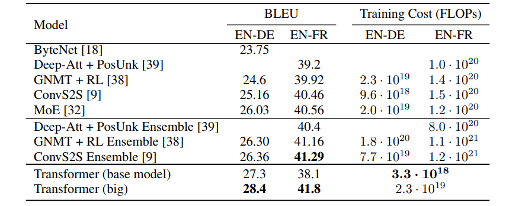
Điểm nổi bật
- Transformer base đã vượt nhiều mô hình dịch máy mạnh trước đó như ConvS2S và GNMT + RL trên EN-DE.
- Transformer big đạt kết quả tốt nhất trong bảng trên cả EN-DE và EN-FR.
- Chi phí huấn luyện của Transformer base chỉ khoảng 3.3 · 10¹⁸ FLOPs, thấp hơn nhiều so với các mô hình ensemble.
Ý nghĩa chính
- Kết quả này chứng minh rằng attention có thể trở thành cơ chế chính của mô hình sequence transduction, không chỉ là thành phần phụ trợ cho RNN/LSTM.
- Transformer đạt đồng thời hai mục tiêu quan trọng: chất lượng dịch cao và hiệu quả huấn luyện tốt.
6.2 Ablation và Model Variations
Paper tiếp tục phân tích các biến thể của Transformer để kiểm tra tác động của từng thành phần kiến trúc: số head attention, kích thước mô hình, dropout, positional encoding và số bước huấn luyện.
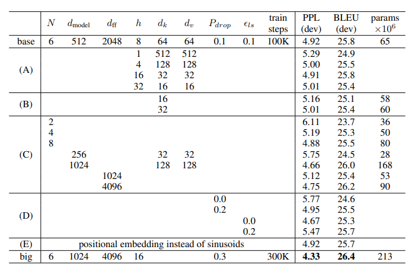
Điểm nổi bật
- Số head ảnh hưởng đến chất lượng: quá ít head làm mô hình mất khả năng học nhiều kiểu quan hệ song song.
- Kích thước mô hình lớn hơn thường tốt hơn: tăng $d_{model}$ và $d_{ff}$ giúp cải thiện BLEU, nhưng làm tăng số tham số và chi phí huấn luyện.
- Learned positional embedding gần tương đương sinusoidal positional encoding: kết quả cho thấy điểm khác biệt không lớn trong thí nghiệm của paper.
Ý nghĩa chính
- Ablation cho thấy hiệu quả của Transformer không đến từ một chi tiết đơn lẻ, mà từ sự kết hợp giữa multi-head attention, feed-forward dimension lớn, regularization hợp lý và training schedule ổn định.
- Việc sinusoidal PE và learned PE cho kết quả gần nhau cho thấy điểm cốt lõi không nằm ở dạng positional encoding cụ thể, mà ở việc mô hình cần có tín hiệu vị trí để xử lý chuỗi.
6.3 Generalization sang Constituency Parsing
Ngoài dịch máy, paper còn thử Transformer trên bài toán English constituency parsing để kiểm tra khả năng tổng quát hóa của kiến trúc sang một tác vụ sequence transduction khác.
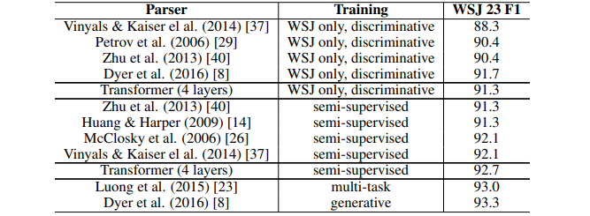
Điểm nổi bật
- Transformer có thể xử lý tốt tác vụ có đầu ra cấu trúc, không chỉ dịch máy.
- Mô hình đạt kết quả mạnh ngay cả khi dùng kiến trúc tổng quát.
- Kết quả parsing củng cố nhận định rằng self-attention học được các quan hệ cú pháp và phụ thuộc dài trong câu.
Ý nghĩa chính
- Thí nghiệm parsing cho thấy Transformer là một kiến trúc tổng quát cho sequence transduction, không bị giới hạn trong machine translation.
- Đây là một dấu hiệu quan trọng cho sự phát triển sau này của Transformer trong nhiều tác vụ NLP khác nhau như summarization, question answering, language modeling và code generation.
7. Vì sao Self-Attention hiệu quả?
Ba tiêu chí paper dùng để so sánh
- Per-layer computational complexity: chi phí tính toán mỗi layer.
- Sequential operations: số bước tuần tự tối thiểu, ảnh hưởng trực tiếp đến khả năng song song hóa.
- Maximum path length: độ dài đường truyền giữa hai vị trí bất kỳ, ảnh hưởng đến học phụ thuộc xa.
So sánh trực giác
| Kiểu layer | Điểm mạnh | Điểm yếu |
|---|---|---|
| RNN | Tự nhiên cho chuỗi | Tuần tự, khó song song hóa, path dài |
| CNN | Song song hơn RNN | Cần nhiều layer để nối token xa |
| Self-attention | Mọi token nối trực tiếp, song song tốt | Chi phí attention tăng theo $O(n^2)$ theo độ dài chuỗi |
- RNN truyền thông tin theo chuỗi $1 \rightarrow 2 \rightarrow 3 \rightarrow 4$, nên token xa nhau phải đi qua nhiều bước trung gian.
- Transformer cho phép token 1 tương tác trực tiếp với token 4 trong một attention layer.
- Điểm mạnh attention cũng là nguồn chi phí chính: mọi token nhìn mọi token, tạo attention map kích thước $n \times n$.
8. Hạn chế và các hướng phát triển sau Transformer
Hạn chế
- Chi phí attention theo cặp token: attention map có kích thước $n \times n$.
- Tốn VRAM với context dài: ví dụ $n=1024$ tạo hơn một triệu attention scores cho mỗi head/batch item.
- Nhạy với training recipe: optimizer, warmup, dropout, label smoothing và batch size đều ảnh hưởng chất lượng.
Các cải tiến hiện đại
- RoPE / relative positional encoding: cải thiện biểu diễn vị trí, đặc biệt với context dài.
- FlashAttention: tính attention tiết kiệm bộ nhớ hơn.
- Grouped Query Attention: giảm chi phí KV cache trong inference.
- Long-context attention: xử lý chuỗi dài bằng sparse/sliding/window/global attention.
- Mixture-of-Experts: tăng số tham số nhưng chỉ kích hoạt một phần expert cho mỗi token.
Kết luận phần này
Kiến trúc hiện đại thường không bỏ Transformer; chúng tối ưu các điểm nghẽn của Transformer: position, memory, attention efficiency, inference cache và scaling.
9. Kết luận
Transformer thay đổi hướng phát triển của NLP bằng cách chứng minh rằng attention có thể là lõi kiến trúc, không chỉ là module phụ trợ bên cạnh RNN/CNN. Điểm mạnh của mô hình đến từ ba yếu tố kết hợp: self-attention giúp token tương tác trực tiếp, multi-head attention học nhiều kiểu quan hệ song song, và positional encoding bổ sung thứ tự cho một kiến trúc không tuần tự. Kết quả trên WMT 2014 và các ablation trong paper cho thấy kiến trúc này vừa đạt chất lượng cao, vừa huấn luyện hiệu quả hơn, từ đó trở thành nền tảng cho các mô hình ngôn ngữ lớn hiện đại.
10. Nguồn tham khảo
- Vaswani et al., Attention Is All You Need, arXiv:1706.03762v7.
https://arxiv.org/html/1706.03762v7 - Slides tham khảo: Transformer — Attention Is All You Need.
https://haworthiasa.github.io/AGENT-LAB/slides/transformer/index.html